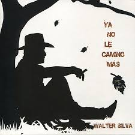
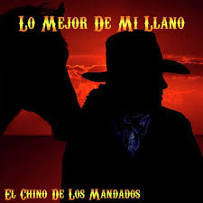
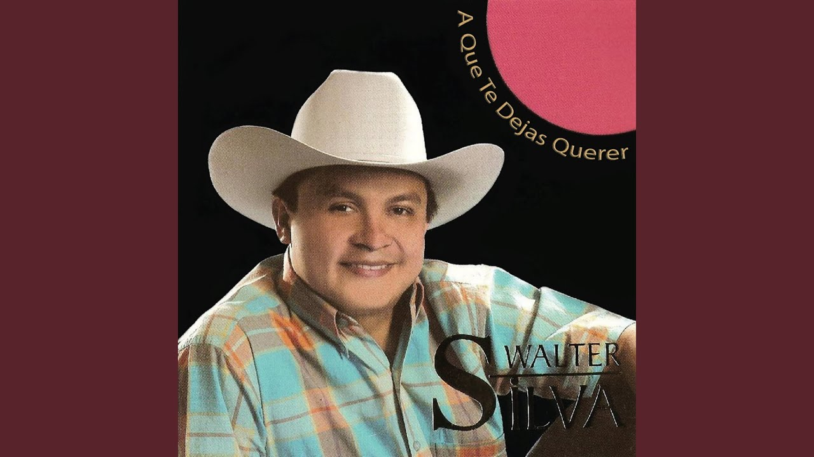

TEMAS RECONOCIDOS DE WALTER SILVA
| NOMBRE | DESCRIPCION | IMAGEN |
|---|
| Ya no le camino mas |
En el año 2008, el mismo año de la primera nominación a los Grammy Latino, graba un éxito que encumbra más su carrera de cantautor Ya no le camino mas.
Hablar de éste CD en la historia del joropo, es decir que es uno de los más sonados en Colombia y Venezuela, puesto que todas sus canciones se convirtieron
en grandes éxitos. |
 |
| NOMBRE | DESCRIPCION | IMAGEN |
|---|
| El chino de los mandados |
“El chino de los mandados es una canción que yo le escribí a mi madre, realmente nunca tuve otro interés ajeno a recordar lo que pasó en nuestra casa familiar.
Resultó identificando a todos los llaneros campesinos, una canción que se convirtió en un clásico de la música llanera con 9 años de haber sido grabada. |
 |
| NOMBRE | DESCRIPCION | IMAGEN |
|---|
| Romance del coleador |
En octubre del año 1993, decide por sus propios medios grabar diez canciones producidas por él mismo.. El trabajo discográfico se llamó Romance del coleador canción
que fue que fué éxito en el llano Colombiano. |
|
| NOMBRE | DESCRIPCION | IMAGEN |
|---|
| A que te dejas querer |
En el año 2002 graba lo que fue el gran inicio de ascenso a la fecha en sus producciones musicales una sobre otra. El cd A QUE TE DEJAS QUERER, rompe por primera vez el
record de ventas y sintonía en el llano Colombiano en su totalidad, y es la primera canción suya, en ser coreada por los escenarios. |
 |